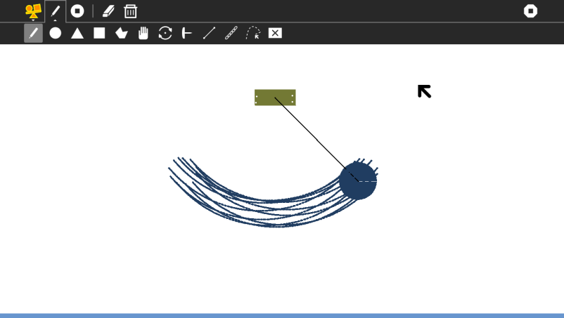
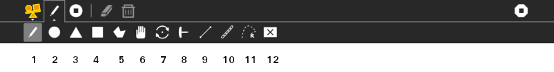
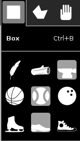
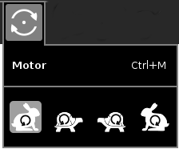
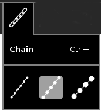

Physics¶
About¶

Physics is a physical world simulator and playground. You can add squares, circles, triangles, or draw your own shapes, and see them come to life with forces (think gravity, Newton!), friction (scrrrrape), and inertia (ahh, slow down!).
Getting to know the tools¶

This image shows all the tools used for creating objects. Reference the number shown below the tool to learn what it does.
- Magic Pen Tool:
Draw anything and it will appear in the canvas. You can use it to create custom shapes, or a surface. Like a slope.
- Circle Tool:
You can make circles with it, just drag. Try rolling a circle down a slope.
- Triangle Tool:
You can make equilateral triangles (all sides equal) with this tool. Try making a seesaw by combining a triangle and a rectangle (described below).
- Rectangle Tool:
For making rectangles.
- Polygon Tool:
You can make multi-sided shapes with this tool. Drag the mouse, then click on place where the vertices of the polygon should be. after you are finished, click in the circle surrounding the first dot you drew and the shape will be drawn.
- Grab Tool:
You can move objects around with this tool. You can use it even when the game is running: Try grabbing an object and moving it around. It can be really fun.
When the game is paused, you can use dragging to move objects with more precision. You can also drag pins and motors. When you select the grab tool, the pins and motors will become bigger so that you can easily hold and drag.
ProTip: You can move motors and pins from one object to another. Also, moving them out of the body and dropping them in empty space deletes them.
- Motor Tool:
With this tool, you can place a motor on an object. The object will then start rotating around that point. You can also change the speed with which it rotates, as will be explained in the Palette section.
- Pin Tool:
This tool allows you to make objects stick to the background and not move around, very much like pinning a paper to a clipboard. Just click where you want to place a pin.
- Joint Tool:
With this tool you can attach objects to other objects. Click on the point at which you want to attach the joint in the first object and drag the mouse over to the point at which you want the joint to end on the second object. Done!
- Rope Tool:
Joints are like iron bars, they cannot bend. If you need rope, this tool does it for you. Just click and drag to make the rope. Be careful though, removing ropes once they have been made can be difficult.
- Trace Tool:
Want to see how and where an object is moving? Put a tracer on it! Select this tool and click on the point on the object you want to trace. You can delete a tracer by left clicking with the destroy tool (below)
- Destroy Tool:
Select this tool and drag to leave a trail of destruction behind! You not only use this tool to destroy objects, but also pins, motors and tracers. A single left click deletes one pin/motor/tracer on the object. Since ropes are just small balls joined with small joints, you can try deleting them too, but it takes time and is mildly annoying. Therefore try to make rope only when you are sure you want it.
ProTip: If you’ve drawn with a tool before and want multiple copies of the same shape, just do a left-click and the same object with be drawn again. Try it with the Rectangle tool! Draw a square and then left click again, you’ll get another copy of the square.
Other cool features¶
Using this button, you can erase everything from the canvas. Careful, you cannot undo this!
This button allows you to delete all trace marks on the canvas.
These two buttons allow you to pause or start the game. The first button makes the game start again after a pause and the second stops it. These are ultra useful while building complicated machines, which you cannot build while the machine is running.
All of the objects have palette menus to adjust object properties:

- Mass
feather, wood, and anvil represent light to dense
- Bounciness
basketball, baseball, and bowling ball represent very bouncy to inelastic
- Friction
ice skate, shoe, and sneaker represent low to high coefficient of friction

The motor has a palette to set speed (fast and slow) and direction (counter-clockwise and clockwise)

The chain has a palette to set the coarseness and weight of the chain elements
Ideas to try¶
Here are some ideas you could try:
Build a catapult to simulate Angry Birds
Build a machine that sorts different sized balls in to two buckets, large and small, with no ball jams.
A cyclic mechanism for lifting balls from the bottom of the screen to the top, again and again.
Try dropping 2 different mass objects at the same time.
Experiment with pendulums of different lengths and masses.
Ping pong, can you make a device that hits a ball back and forth across the screen?
Try building a mechanical binary clock.
Convert rotation into parallel motion using pistons.
Experiment with touching one motorised circle against one pinned circle of various sizes.
Try building a rag-doll puppet and make it dance in a convincing way.
Use just links and circles to make a structurally sound Eiffel Tower.
Try building a ratchet mechanism.
Try building an analogue clock face where the min hand goes around 60 times for each hour.
Modify the program itself: Modifying Physics